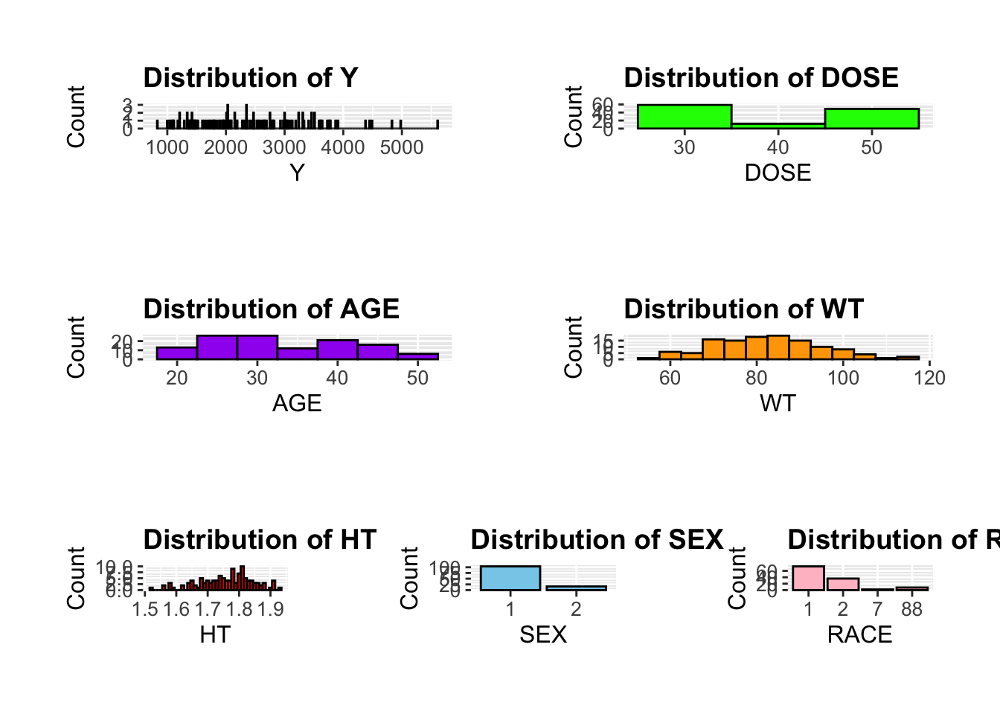

# Constructing the file path using here()file_path <-here("fitting-exercise","data", "Mavoglurant_A2121_nmpk.csv")# Importing the Excel file from the file pathMavoglurant_data <-read.csv(file_path)# Viewing the uppermost data of the imported datasethead(Mavoglurant_data)
Here, we will write a code to make a plot that shows a line for each individual, with DV on the y-axis and time on the x-axis, Stratified by dose ( using a different color for each dose).
# Creating a line plot with different colors for each doseggplot(Mavoglurant_data, aes(x = TIME, y = DV, group = ID, color =factor(DOSE))) +geom_line() +labs(title ="DV over Time by ID",x ="Time",y ="DV",color ="Dose") +theme_minimal()
1.1 Preparing the data
As there are some individuals that seem to have received the drug more than once, we will only keep observations with OCC = 1
#writing a code that keeps only observations with OCC = 1Mavoglurant_data_OCC1 <-subset(Mavoglurant_data, OCC ==1)#writing code to exclude the observations with TIME = 0Mavoglurant_data_filtered <- Mavoglurant_data_OCC1 %>%filter(TIME !=0)
2 Computing the total amount of drug for each individual by adding all the DV values
Here, we will compute the total amount of drug for each individual by adding all the DV values.
Now, we will create a dataframe that contains only the observations where TIME == 0, and then we will check the dimensions to see if it is correctly created.
# creating a data frame that contains only the observations where TIME == 0time_zero_data <- Mavoglurant_data %>%filter(TIME ==0)dim(time_zero_data) # checking dimension
[1] 198 17
Now, we will create a new dataframe using the join function and then we will check the dimensions to see if it is correctly created.
# using the join function to combine those two data framesfinal_data <- time_zero_data %>%left_join(summarized_data, by ="ID")dim(final_data) # checking dimension
[1] 198 18
2.1 Creating the final dataset
Writing a code that converts RACE and SEX to factor variables and keeps only these variables: Y,DOSE,AGE,SEX,RACE,WT,HT
Now, we will go through the Exploratory Data Analysis process. We will create tables, figures, and plots to see if there is any relation between the variables.
##Making some useful summary tables.
Here, we have a summary table of all the variables we have in our final dataset.
# Calculating summary statistics for variablessummary_stats <- final_data_cleaned %>%summarise(across(c(Y, DOSE, AGE, WT, HT), list(Mean =~mean(., na.rm =TRUE),Min =~min(., na.rm =TRUE),Max =~max(., na.rm =TRUE),SD =~sd(., na.rm =TRUE))))# Reshaping the data to better present itsummary_stats <- summary_stats %>%pivot_longer(cols =everything(), names_to =c("Variable", ".value"), names_sep ="_")# Printing the summary statistics as a table formatkable(summary_stats, caption ="Summary Statistics", align ="c")
Summary Statistics
Variable
Mean
Min
Max
SD
Y
2371.030253
826.430000
5606.58000
948.3305848
DOSE
37.373737
25.000000
50.00000
12.1453430
AGE
32.813131
18.000000
50.00000
8.8667765
WT
83.311616
56.600000
115.30000
12.5273150
HT
1.762633
1.520031
1.93012
0.0838085
3.1 Plotting the relationship with outcome of interest (Y)
Here, we will show some scatterplots or boxplots, whichever is suitable, between the main outcome of interest (total drug, Y) and other predictors. We will use box-plot if the variable is categorical.
# Scatterplot: Y vs DOSEp1 <-ggplot(final_data_cleaned, aes(x = DOSE, y = Y)) +geom_point(alpha =0.6, color ="blue") +geom_smooth(method ="lm", color ="red", se =FALSE) +labs(title ="Y vs DOSE", x ="DOSE", y ="Y")# Scatterplot: Y vs AGEp2 <-ggplot(final_data_cleaned, aes(x = AGE, y = Y)) +geom_point(alpha =0.6, color ="green") +geom_smooth(method ="lm", color ="red", se =FALSE) +labs(title ="Y vs AGE", x ="AGE", y ="Y")# Scatterplot: Y vs WTp3 <-ggplot(final_data_cleaned, aes(x = WT, y = Y)) +geom_point(alpha =0.6, color ="purple") +geom_smooth(method ="lm", color ="red", se =FALSE) +labs(title ="Y vs WT", x ="WT", y ="Y")# Scatterplot: Y vs HTp4 <-ggplot(final_data_cleaned, aes(x = HT, y = Y)) +geom_point(alpha =0.6, color ="orange") +geom_smooth(method ="lm", color ="red", se =FALSE) +labs(title ="Y vs HT", x ="HT", y ="Y")# Boxplot: Y vs SEXp5 <-ggplot(final_data_cleaned, aes(x = SEX, y = Y, fill = SEX)) +geom_boxplot() +labs(title ="Y vs SEX", x ="SEX", y ="Y") +theme(legend.position ="none")# Boxplot: Y vs RACEp6 <-ggplot(final_data_cleaned, aes(x = RACE, y = Y, fill = RACE)) +geom_boxplot() +labs(title ="Y vs RACE", x ="RACE", y ="Y") +theme(legend.position ="none")# Combine all plots into a common canvascombined_plots <- (p1 + p2) / (p3 + p4) / (p5 + p6)# Display the combined plotscombined_plots
`geom_smooth()` using formula = 'y ~ x'
`geom_smooth()` using formula = 'y ~ x'
`geom_smooth()` using formula = 'y ~ x'
`geom_smooth()` using formula = 'y ~ x'
# Save the combined plot to a fileggsave("combined_plots.png", combined_plots, width =16, height =12, dpi =300)
`geom_smooth()` using formula = 'y ~ x'
`geom_smooth()` using formula = 'y ~ x'
`geom_smooth()` using formula = 'y ~ x'
`geom_smooth()` using formula = 'y ~ x'
We can observe from the figures above that:
Dose and Y (Total drug) dont have a strong correlation.
Age and Y dont have a strong correlation.
Weight and Y have a negative correlation.
Height and Y have a negative correlation.
Sex 1 on average has higher total drug.
3.2 Plotting the distribution of variables
Now, we will plot the distributions of our variables to make sure they all make sense. We will set the bin according to the values and distribution patterns within the variable
# Custom theme for consistent stylingcustom_theme <-theme(plot.title =element_text(size =14, face ="bold"),axis.title =element_text(size =12),axis.text =element_text(size =10),plot.margin =margin(1, 1, 1, 1, "cm"))# Histogram for Yp1 <-ggplot(final_data_cleaned, aes(x = Y)) +geom_histogram(binwidth =10, fill ="blue", color ="black") +labs(title ="Distribution of Y", x ="Y", y ="Count") + custom_theme# Histogram for DOSEp2 <-ggplot(final_data_cleaned, aes(x = DOSE)) +geom_histogram(binwidth =10, fill ="green", color ="black") +labs(title ="Distribution of DOSE", x ="DOSE", y ="Count") + custom_theme# Histogram for AGEp3 <-ggplot(final_data_cleaned, aes(x = AGE)) +geom_histogram(binwidth =5, fill ="purple", color ="black") +labs(title ="Distribution of AGE", x ="AGE", y ="Count") + custom_theme# Histogram for WTp4 <-ggplot(final_data_cleaned, aes(x = WT)) +geom_histogram(binwidth =5, fill ="orange", color ="black") +labs(title ="Distribution of WT", x ="WT", y ="Count") + custom_theme# Histogram for HTp5 <-ggplot(final_data_cleaned, aes(x = HT)) +geom_histogram(binwidth =0.01, fill ="red", color ="black") +labs(title ="Distribution of HT", x ="HT", y ="Count") + custom_theme# Bar plot for SEXp6 <-ggplot(final_data_cleaned, aes(x = SEX)) +geom_bar(fill ="skyblue", color ="black") +labs(title ="Distribution of SEX", x ="SEX", y ="Count") + custom_theme# Bar plot for RACEp7 <-ggplot(final_data_cleaned, aes(x = RACE)) +geom_bar(fill ="pink", color ="black") +labs(title ="Distribution of RACE", x ="RACE", y ="Count") + custom_theme# Combine all plots into a common canvascombined_plots <- (p1 + p2) / (p3 + p4) / (p5 + p6 + p7)# Display the combined plotscombined_plots

# Save the combined plot to a fileggsave("variable_distributions.png", combined_plots, width =16, height =12, dpi =300)
The distribution of the variables make sense in my opinion. Age, Weight, Height are all fairly normally distributed. Total drug has a somewhat uniform distribution. Other categorical variables have an unbalanced distribution among them but it is practically possible if the research is focused on specific group of people.
3.3 Pair-wise plots
Here, we will plot different variables against each other to see any possible relation or pattern between the variables.
Note: Please ignore the plots of a variable against itself as it does not make any sense.
# Select the variables of interestselected_vars <- final_data_cleaned %>%select(Y, DOSE, AGE, WT, HT) # Include only numeric variables for pair plots# Create a pair plotpair_plot <-ggpairs(selected_vars, title =" Plotting pairs of Numeric Variables",lower =list(continuous =wrap("smooth", alpha =0.3, color ="blue")), # Add smooth linesdiag =list(continuous =wrap("densityDiag", fill ="orange")), # Density plots on diagonalupper =list(continuous =wrap("cor", size =4))) # Add correlation coefficients# Display the pair plotprint(pair_plot)
# Save the pair plotggsave("pair_plot.png", pair_plot, width =12, height =10, dpi =300)
It is visible that HT and WT are strongly correlated. Y shows correlation with WT. Age and wT also show some moderate correlation.
3.4 Correlation among variables
Here, we will create a cross-table matrix that shows the correlation among our variable of interests.
# Create a correlation plotcor_plot <-ggcorr(selected_vars, method =c("pairwise", "pearson"), # Use Pearson correlationlabel =TRUE, # Display correlation valueslabel_size =4, color ="grey50", hjust =0.75, size =3, layout.exp =1)# Display the correlation plotprint(cor_plot)
# Save the correlation plotggsave("cor_plot.png", cor_plot, width =8, height =6, dpi =300)
It is visible that HT and WT show the maximum correlation with a correlation coefficient of 0.6. Age and HT also show sloghtly weaker correlation. Dose has no correlation with WT and HT.
4 Fitting a model for Y with only DOSE, and ALL predictors
We will now fit a linear model to the continuous outcome (Y) using the main predictor of interest to be DOSE in one case and using all predictors in another case.
# Fit a linear model using only DOSE as the predictormodel_dose <-lm(Y ~ DOSE, data = final_data_cleaned)summary(model_dose)
Call:
lm(formula = Y ~ DOSE, data = final_data_cleaned)
Residuals:
Min 1Q Median 3Q Max
-1639.6 -811.0 -124.4 729.0 3140.5
Coefficients:
Estimate Std. Error t value Pr(>|t|)
(Intercept) 2089.749 218.101 9.582 <2e-16 ***
DOSE 7.526 5.551 1.356 0.177
---
Signif. codes: 0 '***' 0.001 '**' 0.01 '*' 0.05 '.' 0.1 ' ' 1
Residual standard error: 946.3 on 196 degrees of freedom
Multiple R-squared: 0.009291, Adjusted R-squared: 0.004236
F-statistic: 1.838 on 1 and 196 DF, p-value: 0.1767
We can observe that dose has an insignificant effect on Y.
# Fit a linear model using all predictorsmodel_all <-lm(Y ~ DOSE + AGE + SEX + RACE + WT + HT, data = final_data_cleaned)summary(model_all)
Call:
lm(formula = Y ~ DOSE + AGE + SEX + RACE + WT + HT, data = final_data_cleaned)
Residuals:
Min 1Q Median 3Q Max
-1916.3 -763.9 -100.8 665.6 3075.5
Coefficients:
Estimate Std. Error t value Pr(>|t|)
(Intercept) 6580.126 2093.164 3.144 0.00194 **
DOSE 7.967 5.399 1.476 0.14168
AGE 1.371 9.103 0.151 0.88046
SEX2 -724.935 250.116 -2.898 0.00419 **
RACE2 -51.315 150.545 -0.341 0.73359
RACE7 -231.519 477.617 -0.485 0.62842
RACE88 -94.317 276.096 -0.342 0.73302
WT -16.765 7.227 -2.320 0.02143 *
HT -1723.282 1259.612 -1.368 0.17290
---
Signif. codes: 0 '***' 0.001 '**' 0.01 '*' 0.05 '.' 0.1 ' ' 1
Residual standard error: 917 on 189 degrees of freedom
Multiple R-squared: 0.1029, Adjusted R-squared: 0.06491
F-statistic: 2.709 on 8 and 189 DF, p-value: 0.007584
We can observe that SEX2 and Wt has a significant effect on Y. But majority o the predictors are insignificant in the model. This has lead to an insufficient information to predict the dependent vriable and only around 10% variation in the dependent variable is explained by the model with all predictors. With only DOSE the performance is even poorer.
# For RMSE calculation# Function to compute RMSE and R-squaredcompute_metrics <-function(model, data) {# Predictions predictions <-predict(model, newdata = data)# Actual values actual <- data$Y# Compute RMSE rmse <-sqrt(mean((actual - predictions)^2))# Compute R-squared r_squared <-summary(model)$r.squared# Return metricsreturn(list(RMSE = rmse, R_squared = r_squared))}# Compute metrics for the DOSE-only modelmetrics_dose <-compute_metrics(model_dose, final_data_cleaned)# Compute metrics for the all-predictors modelmetrics_all <-compute_metrics(model_all, final_data_cleaned)# Create a data frame with the resultsresults_table <-data.frame(Model =c("DOSE Only", "All Predictors"),RMSE =c(metrics_dose$RMSE, metrics_all$RMSE),R_squared =c(metrics_dose$R_squared, metrics_all$R_squared))kable(results_table, caption ="Model Performance Metrics", align ="c")
Model Performance Metrics
Model
RMSE
R_squared
DOSE Only
941.5283
0.0092907
All Predictors
895.9533
0.1028807
5 Fitting a Logistic model for SEX with only DOSE, and ALL predictors
We will now fit a linear model to the binary outcome (SEX) using the main predictor of interest to be DOSE in one case and using all predictors in another.
# Ensuring SEX is a binary factorfinal_data_cleaned <- final_data_cleaned %>%mutate(SEX =factor(SEX))# Fiting a logistic model using only DOSE as the predictorlogistic_dose <-glm(SEX ~ DOSE, data = final_data_cleaned, family =binomial())summary(logistic_dose)
Call:
glm(formula = SEX ~ DOSE, family = binomial(), data = final_data_cleaned)
Coefficients:
Estimate Std. Error z value Pr(>|z|)
(Intercept) -1.825897 0.688944 -2.650 0.00804 **
DOSE -0.002916 0.017673 -0.165 0.86895
---
Signif. codes: 0 '***' 0.001 '**' 0.01 '*' 0.05 '.' 0.1 ' ' 1
(Dispersion parameter for binomial family taken to be 1)
Null deviance: 150.17 on 197 degrees of freedom
Residual deviance: 150.14 on 196 degrees of freedom
AIC: 154.14
Number of Fisher Scoring iterations: 4
We can observe that DOSE does not significantly affect SEX.
# Fit a logistic model using all predictorslogistic_all <-glm(SEX ~ DOSE + AGE + RACE + WT + HT + Y, data = final_data_cleaned, family =binomial())summary(logistic_all)
Call:
glm(formula = SEX ~ DOSE + AGE + RACE + WT + HT + Y, family = binomial(),
data = final_data_cleaned)
Coefficients:
Estimate Std. Error z value Pr(>|z|)
(Intercept) 5.419e+01 1.237e+01 4.382 1.17e-05 ***
DOSE 2.690e-03 2.986e-02 0.090 0.9282
AGE 7.667e-02 4.500e-02 1.704 0.0884 .
RACE2 -1.815e+00 1.017e+00 -1.785 0.0742 .
RACE7 -1.584e-02 2.613e+00 -0.006 0.9952
RACE88 -1.374e+00 1.529e+00 -0.899 0.3686
WT -7.562e-02 5.347e-02 -1.414 0.1573
HT -2.920e+01 7.318e+00 -3.990 6.60e-05 ***
Y -1.236e-03 5.028e-04 -2.458 0.0140 *
---
Signif. codes: 0 '***' 0.001 '**' 0.01 '*' 0.05 '.' 0.1 ' ' 1
(Dispersion parameter for binomial family taken to be 1)
Null deviance: 150.171 on 197 degrees of freedom
Residual deviance: 57.426 on 189 degrees of freedom
AIC: 75.426
Number of Fisher Scoring iterations: 7
We can observe that HT and Y significantly affect Y. We will need to check the Accuracy and AUC values to tell about the performance of the model.
# Function to compute accuracy and ROC-AUCcompute_metrics_logistic <-function(model, data) {# Predict probabilities predicted_probs <-predict(model, newdata = data, type ="response")# Convert probabilities to binary predictions (0 or 1) predicted_classes <-ifelse(predicted_probs >0.5, 1, 0)# Actual classes actual_classes <-as.numeric(data$SEX) -1# Convert factor to numeric (0 or 1)# Compute accuracy accuracy <-mean(predicted_classes == actual_classes)# Compute ROC-AUC roc_auc <-roc(actual_classes, predicted_probs)$auc# Return metricsreturn(list(Accuracy = accuracy, ROC_AUC = roc_auc))}# Compute metrics for the DOSE-only modelmetrics_dose <-compute_metrics_logistic(logistic_dose, final_data_cleaned)
Setting levels: control = 0, case = 1
Setting direction: controls < cases
# Compute metrics for the all-predictors modelmetrics_all <-compute_metrics_logistic(logistic_all, final_data_cleaned)
Setting levels: control = 0, case = 1
Setting direction: controls < cases
results_table_logistic <-data.frame(Model =c("DOSE Only", "All Predictors"),Accuracy =c(metrics_dose$Accuracy, metrics_all$Accuracy),ROC_AUC =c(metrics_dose$ROC_AUC, metrics_all$ROC_AUC))# Print the table using kablekable(results_table_logistic, caption ="Logistic Model Performance Metrics", align ="c")
Logistic Model Performance Metrics
Model
Accuracy
ROC_AUC
DOSE Only
0.8737374
0.5090173
All Predictors
0.9494949
0.9773410
The AUC value for DOSE only is similar to a random model. The AUC value for All predictors is close to 1 implying a perfect prediction performance. I personally find this very surprising that we can predict SEX so perfectly.